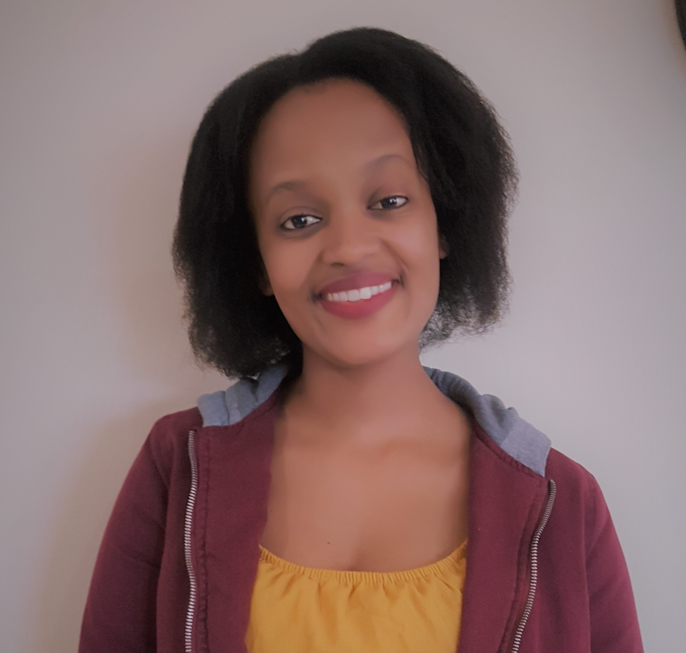

About Me
Welcome. Here's some information about me...



BIO
I am from a small village called Dibinkonzo in Sterkspruit, Eastern Cape. My interests are coding (Full Stack Development), music, hiking, basketball, books (novel and fiction), writing, and finding ways to develop my community.
ACHIEVEMENTS & SOME HIGHLIGHTS
Umzamomhle Community Garden Project
* Successfully started a community garden project together with members of Dibinkonzo Village in Sterkspruit, Eastern Cape: See more
Bayathandwa Day Care Centre Volunteering: Dibinkonzo Village, Eastern Cape
* Early Childhood Development: 0 - 5 years old children
* Stimulation, Developmental Activities, Hygiene, Nutritional Meals